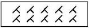

표면처리기능장 (2008-07-13 기출문제)
1과목: 임의 구분
1. 광택니켈 도금작업 중에 발생한 쌍극현상(Bipolar)에 대한 설명으로 틀린 것은?
- 조 전압이 낮은 경우에 발생하기 쉽다.
- 제품을 음극에 접속하면 쌍극현상이 사라진다.
- 물품과 걸이의 접속이 나빠 통전이 안 될 때 발생하기 쉽다.
- 도금욕 중에 있는 제품의 한 면은 음극(-), 반대 면은 양극(+)으로 되는 현상이다.
(정답률: 알수없음)

2. 시안화구리 도금에서 3V, 10A로 4dm2에 20㎛의 두께로 도금을 하려고 할 때 필요한 도금 시간은 약 몇 분인가? (단, 구리의 비중은 8.9, 구리의 적정량은 2.37g/Ah, 전류 효율은 100%이다.)
- 24
- 18
- 14
- 10
(정답률: 알수없음)
3. 다음 중 구리 전기도금에 대한 설명으로 틀린 것은?
- 시안화구리 전기 도금액은 1가 이온을 석출한다.
- 황산구리 전기 도금액은 2가 이온을 석출한다.
- 붕불화구리 전기 도금액은 전주도금에 많이 사용한다.
- 알칼리 도금액은 붕불화구리와 술파민산구리 도금액이 있다.
(정답률: 알수없음)
4. 다음 중 수소 전극의 표준전극 전위값은 몇 V인가?
- -0.2
- -0.1
- 0
- +0.1
(정답률: 알수없음)
5. 다음 중 전기 이중성을 설명한 것으로 틀린 것은?
- 일반 계면 현상의 일종이다.
- Holm-holtz 성이라고도 한다.
- 전극반응속도론과 관계가 있다.
- 서로 같은 전하를 가진 이온으로 균형을 이룬다.
(정답률: 알수없음)
6. 다음 중 할셀(Hull Cell)시험과 관계없는 것은?
- 밀착성 검사
- 광택범위 검사
- 불순물 검사
- 욕 조성검사
(정답률: 알수없음)
7. 알루미늄의 양극산화처리 후 봉공처리를 하는 방법이 아닌 것은?
- 증기 처리
- 옥살산처리
- 중크롬산처리
- 니켈-코발트염처리
(정답률: 알수없음)
8. 무전해 도금액의 보조성분에 속하지 않는 것은?
- PH 조정제, 완충제
- 착화제, 촉진제
- 금속염, 환원제
- 안정제, 개량제
(정답률: 알수없음)
9. 다음 중 화학 니켈도금에 사용되는 환원제는?
- 포르말린
- 아연산염
- 히드라진염
- 차아인산소다
(정답률: 알수없음)
10. 피로인산 구리 도금에서 가장 효율적인 P비(P2O7/Cu)는?
- 1.0~2.0
- 3.0~4.0
- 7.0~8.0
- 10.0~11.0
(정답률: 알수없음)
11. 도금 후 도금 결함이 많은 소재를 재도금하기 위하여 도금층을 박리하는 방법으로 틀린 것은?
- 알루미늄상에 구리도금의 박리는 진한 질산을 이용한다.
- 비철금속 상에 구리도금의 박리는 황산소다와 황산을 이용한다.
- 철 소지상에 황동도금의 박리는 염산과 황산을 이용한다.
- 구리 또는 황동 상에 금도금의 박리는 시안화소다 또는 과산화수소를 이용한다.
(정답률: 알수없음)
12. 연마재 중 Fe2O3의 조성으로 되어 있으며, 황산철을 태워 만들어 보통의 금속 연마재로 사용되는 것은?
- 청봉
- 크로카스
- 트리폴리
- 매치레스
(정답률: 알수없음)
13. 도금 작업장에서 안전 수칙 사항으로 틀린 것은?
- 필요한 보호구는 반드시 착용한다.
- 기계운전 도중에도 운동 부분의 이물질을 청소한다.
- 작업장 내부에는 관계자 외에 출입을 금한다.
- 독극물을 많이 사용하기 때문에 작은 상처도 생기지 않도록 주의한다.
(정답률: 알수없음)
14. 다음 중 무광택니켈 도금액의 PH를 낮추려고 할 때 적용되는 약품은?
- 탄소니켈
- 수산화니켈
- 가성소다
- 황산 또는 염산
(정답률: 알수없음)
15. 다음 중 광택제의 사용조건으로 틀린 것은?
- 레벨링 효과가 클 것
- 불순물에 예민할 것
- 사용량이 가능한 적을 것
- 넓은 전류밀도 범위에서 사용 가능 할 것
(정답률: 알수없음)
16. 전처리 과정 중 금속표면에 부착되어 있는 유지성의 더러움을 제거하는 조작은?
- 탈지
- 수세
- 침적
- 중화처리
(정답률: 알수없음)
17. 니켈도금에서 PH완충제로 주로 사용되는 것은?
- 황산
- 불산
- 붕산
- 염화니켈
(정답률: 알수없음)
18. 20cm×25cm 크기의 판을 양면 도금하는데 30A의 전류가 흐를 때 전류밀도는 몇 A/dm2인가?
- 1
- 2
- 3
- 4
(정답률: 알수없음)
19. 다음 중 시안화물 취급시 주의사항으로 옳은 것은?
- 산과 시안화물을 혼합하여 사용한다.
- 시안화물 용액은 끓을 때까지 가열하여 사용한다.
- 시안화물 용액은 피펫을 입으로 빨아서 정량해야 한다.
- 의류에 묻었을 때는 하이포 용액으로 중화하여 물로 세척한다.
(정답률: 알수없음)
20. 다음 중 금속사용법에 대한 설명으로 틀린 것은?
- 대부분의 고체 물질인 유리, 목재, 종이, 임의의 어떤 금속 합금에도 단시간에 도금을 할 수 있다.
- 용사장치는 소형이며 이동이 간단하고 설비비가 많이 들지 않으며, 기술적으로도 단시간에 숙련될 수 있다.
- 금속용사는 그 가공물의 크기에 관계없이 할 수 있으며, 두께는 용사횟수를 거듭하면 얼마든지 두껍게 할 수 있다.
- 금속용사는 단공성이 피막이며 산화물을 품고 있지 않아 윤활유 침투가 잘되어 윤활성이 좋고 내마모성이 크다.
(정답률: 알수없음)
2과목: 임의 구분
21. 전기도금에서 고속도도금(High speed Plating)을 하기 위한 방법으로 틀린 것은?
- 액의 온도를 높인다.
- 액의 교반속도를 크게 한다.
- 용액 본체의 농도를 크게 한다.
- 금속이온의 확산 점수가 작은 양을 사용한다.
(정답률: 알수없음)
22. 다음 중 음극전류효율(Ec)과 양극전류효율(Ea)에 따른 전류 효율과 도금액의 상태변화에 대한 설명으로 틀린 것은?
- Ec(%) = (도금량 / 이온 석출량) × 100%
- Ea(%) = (이온 용해량 / 양극 용해량) × 100%
- Ec＞Ea 일 때, 도금액의 금속이온 농도가 희박해진다.
- Ec=Ea 일 때, 장시간 도금하여도 도금액의 성분 변화가 없다.
(정답률: 알수없음)
23. 버프 연마작업에 있어서의 안전 수칙에 대한 설명으로 옳은 것은?
- 작업 할 때에는 머리에 수건 등을 감고서 한다.
- 버프 연마기의 고정은 축에 진동이 없도록 수직으로 장치한다.
- 버프 연마기에는 반드시 안전커버를 해야 하고, 직진 설비를 부착해야 한다.
- 벨트식 연마기의 동력 전담용 평벨트의 레이싱핀은 벨트의 폭보다 더 많이 밖으로 나와 있어야 한다.
(정답률: 알수없음)
24. 할셀시험(Hull cell Test)에서 그림과 같이 나타나고 있는 경우 포면 상태는?

- 수지성 또는 분말상
- 까짐 또는 균열
- 피트 또는 부품
- 줄무늬
(정답률: 알수없음)
25. 표준 용액을 제조할 때 쓰이는 표준물질의 구비조건으로 틀린 것은?
- 반응이 정량적으로 일어나야 한다.
- 가열 및 건조에 의하여 일정한 중량이 되어야 한다.
- 물에 대하여 용해도가 높고 가열하지 않아도 잘 용해 되어야 한다.
- 당량 또는 식(式량)이 커서 평량 할 때 상대오차가 커야한다.
(정답률: 알수없음)
26. 다음 중 착염욕에 대한 특징을 설명한 것으로 틀린 것은?
- 단순염에 비하여 균일전착성이 우수하다.
- 착염욕은 레벨링이 좋은 전착물을 얻기는 힘들다.
- 단순염욕에서 가능했던 합금 도금이 착염욕에서는 불가능하다.
- 단순염보다 높은 과전압하에서 이루어지기 때문에 석출물이 미립자이며, 밀도가 높다.
(정답률: 알수없음)
27. 다음 중 열간가공과 냉간가공을 구분하는 온도는?
- 재결정 온도
- 탄성 변형온도
- 천이 온도
- 소성 변형온도
(정답률: 알수없음)
28. 건식도금법 중 직류 스퍼터링에 대한 설명으로 옳은 것은?
- 저에너지로 기판에 들어오게 되므로 밀착 강도가 작다.
- 타켓재료성분 그대로 스퍼터 코팅을 할 수 없다.
- 조성이 복잡한 것은 적용시킬 수 없다.
- 전류량과 생성파악의 두께가 정비례하므로 콘트롤이 쉽다.
(정답률: 알수없음)
29. 다음 중 CNC 공작기계에 대한 설명으로 옳은 것은?
- 기존의 NC시스템보다 유연성이 나쁘다.
- 컴퓨터와 생산 공장과의 상호 연결이 어렵다.
- 공작기계가 가공물을 가공하고 있는 중에 파트 프로그램의 수정이 가능하다.
- 고장발생시 자기진단이 불가능하며 고장 발생시기 및 상황을 파악하기 힘들다.
(정답률: 알수없음)
30. 금합금 도금액에 시안화니켈칼륨을 첨가했을 경우 색의 변화로 옳은 것은?
- 황색 → 분홍색 → 붉은 색
- 황색 → 연한황색 → 백색
- 황색 → 오렌지색 → 녹색
- 황색 → 녹색 → 붉은 색
(정답률: 알수없음)
31. 철-탄소계 평행상태도에서 탄소함유량이 4.3%인 공정 조직은?
- 레데뷰라이트
- 페라이트
- 시멘타이트
- 오스테나이트
(정답률: 알수없음)
32. 크롬도금을 할 때 양극(anode)에서 일어나는 반응이 아닌 것은?
- 수소 가스의 발생
- 산소 가스의 발생
- 양극 금속의 산화
- 3가 크롬의 산화
(정답률: 알수없음)
33. 다음 중 배럴연마시 장입하는 물의 역할이 아닌 것은?
- 탈지작용
- 윤활작용
- 완승작용
- 청정작용
(정답률: 알수없음)
34. 무재해 운동의 기본이념으로 3대 원칙이 아닌 것은?
- 무(無)의 원칙
- 선취(先取)의 원칙
- 안전(安全)의 원칙
- 참가(參加)의 원칙
(정답률: 알수없음)
35. CAD 작업 중 두개의 직선이 만나는 모서리 부분을 경사진 선으로 작도하는 명령어는?
- 로데이트(Rotate)
- 챔버(Charter)
- 어레이(Array)
- 트림(Trim)
(정답률: 알수없음)
36. 다음 중 표면 장력이 가장 작은 물질은?
- 수은
- 물
- 석유
- 알코올
(정답률: 알수없음)
37. 항공기의 부속품 등에 많이 사용되고 주성분이 Al-Cu-Mg-Mn계 합금은?
- 두랄루민
- 실루민
- 모넬메탈
- 엠렉트론
(정답률: 알수없음)
38. 철강의 표면에 방청 및 도장하지처리, 금속냉간소성 변형 가공용, 전기 절연용, 금속용사 전처리용, 마모윤활 등의 다양한 목적으로 이용되는 도금방법은?
- 화성처리
- 전기도금
- 양극산화
- 열처리
(정답률: 알수없음)
39. 다공질재료에 윤활유를 함유하여 항상 급유할 필요가 없게 만든 합금의 명칭은?
- 오일라이트(Oillite)
- 문쯔메탈(Muntz metal)
- 엘린바(Elinvar)
- 베릴륨동(Beryllium Copper)
(정답률: 알수없음)
40. 동일한 유압원을 이용하여 여러 가지의 기계 조작을 정해진 순서에 따라 작동되는 유압회로는?
- 무부화 회로
- 압력제어 회로
- 유압모터 회로
- 시퀸스 회로
(정답률: 알수없음)
3과목: 임의 구분
41. 다음 중 아노다이징의 대상 금속이 아닌 것은?
- Al
- Mg
- Ti
- Zn
(정답률: 알수없음)
42. 다음 중 금속의 이온화 경향이 가장 큰 것은?
- NA
- K
- Zn
- Pb
(정답률: 알수없음)
43. 일반적으로 아연이나 카드뮴도금을 한 다음에 크로메이트 처리를 할 때 사용되는 크로메이트액 노화에 주된 원인이 아닌 것은?
- 크롬산 농도의 저하
- 용해 아연의 증가
- PH의 상승
- 교반의 부족
(정답률: 알수없음)
44. 이온도금시 전자가 기판에 입사될 때 열저 효과 이외의 역할이 아닌 것은?
- 산화와 환원작용을 한다.
- 표면화학반응을 촉진시킨다.
- 이온 주입(doping)과 이에 따른 이온믹싱을 한다.
- 종착된 금속을 이온이 다시 때려 튀어 나오게 한다.
(정답률: 알수없음)
45. 갈바닉 부식을 방지 또는 감소시키기 위한 방법에 대한 설명으로 틀린 것은?
- 부식억제제를 첨가하거나 도장을 한다.
- 갈바닉 접촉을 이루고 있는 두 금속보다 활성 전위를 가진 제 3의 금속을 설치한다.
- 음극 부분을 쉽게 대처할 수 있게 또는 양극 부근을 보다 얇게 설계한다.
- 이중금속을 함께 사용할 경우, 가능한 한 갈바닉 계열에서 가까이 위치하고 있는 금속 또는 합금을 선택한다.
(정답률: 알수없음)
46. 다음 중 6가 크롬 도금액의 폐수처리 방법은?
- 중화 후 침전시킨다.
- 산화 후 침전시킨다.
- 환원 후 침전시킨다.
- 전해 후 침전시킨다.
(정답률: 알수없음)
47. 다음 중 도금된 제품의 내식성 시험방법이 아닌 것은?
- 염수분무 시험
- 모래 낙하 시험
- 코로드코트 시험
- 폐록실 시험
(정답률: 알수없음)
48. 금속의 전해 정제법의 특징을 설명한 것 중 옳은 것은?
- 전해액을 만들기 위해 침출액을 따로 사용해야 한다.
- 음극에는 얻고자 하는 금속만 석출하면 순도가 높은 금속을 얻을 수 있다.
- 양극으로부터 얻고자 하는 금속과 불순물을 같이 용해 하여야 한다.
- 음극 및 양극이 모두 같은 금속이기 때문에 전해 전압은 과전압과 전해액의 저항에 따른 영향만 받는다.
(정답률: 알수없음)
49. 금속표면에 피복을 하기 위한 전처리 작업 중 탈지제가 갖추어야 할 조건으로 옳은 것은?
- 비등점이 높아야 한다.
- 저점도이며 표면 장력이 작아야 한다.
- 증기밀도 및 액상비중이 작아야 한다.
- 금속에 대해서 부식성 및 반응성이 있어야 한다.
(정답률: 알수없음)
50. 다음 중 도금 조건에 따른 석출 물에 대한 설명으로 틀린 것은?
- 도금조건으로 결졍되는 핵발생 속도, 성장 속도로 인해 석출 금속의 형태가 달라진다.
- 저전도 밀도부에서는 핵발생 속도보다 성장속도가 크면 거친 석출물을 형성한다.
- 비교적 적은 전류밀도에서 지양하고, 균일한 결정조작의 석합물을 얻는다.
- 매우 높은 전류밀도에서 음극 부근의 금속이온 농도가 0이 되어 이온 보급이 원활해 두꺼운 도금을 얻는다.
(정답률: 알수없음)
51. 표면처리 작업시 자동화작업의 특징이 아닌 것은?
- 공해 관리가 용이하고, 작업 환경이 개선된다.
- 액 관리와 공정 제어가 용이하다.
- 요구되는 사양을 제어하여 품질이 안정된다.
- 수동 작업에 비해 작업속도가 늦고 인원이 많이 필요하다.
(정답률: 알수없음)
52. 복잡한 형상 즉, 구멍 속이나 움푹한 곳은 보통 걸이(rack)로는 도금이 되지 않아 각 부의 전류세기를 균일하게 하고, 도금 편차를 줄이기 위하여 사용하는 것은?
- 보조양극
- 절연처리
- 차폐판
- 보조음극
(정답률: 알수없음)
53. 도금표면에서 소재까지 관통하는 미세한 구멍을 무엇이라 하는가?
- 피트
- 균열
- 핀홀
- 무도금
(정답률: 알수없음)
54. 캐비테이션 부식(Cavitation Corrosion)의 방지법으로 틀린 것은?
- 양극방식을 실시한다.
- 내식성이 강한 재료를 선택한다.
- 수압의 차이가 최소가 되도록 설계한다.
- 고무나 플라스틱 등으로 금속 부분을 피복한다.
(정답률: 알수없음)
55. 공정에서 만성적으로 존재하는 것은 아니고 산발적으로 발생하며, 품질의 변동에 크게 영향을 끼치는 요주의 원인의 우발적 원인인 것을 무엇이라 하는가?
- 우연원인
- 이상원인
- 불가피 원인
- 억제할 수 없는 원인
(정답률: 알수없음)
56. 계수 규준형 1회 샘플링 검사(KS A 3102)에 관한 설명으로 가장 거리가 먼 내용은?
- 검사에 제출된 로드의 제조공정에 관한 사전정보가 없어도 샘플링 검사에 적용할 수 있다.
- 생산자측과 구매자측이 요구하는 품질보호를 동시에 만족 시키도록 샘플링 검사방식을 선정한다.
- 파괴검사의 경우와 같이 전수검사가 불가능 할 때에는 사용 할 수 없다.
- 1회만의 거래시에도 사용할 수 있다.
(정답률: 알수없음)
57. 어떤 공장에서 작업하는 데 있어서 소요되는 기간과 비용이 다음 [표]와 같을 때 비용 구매는 얼마인가? (단, 활동시간의 단위는 일(日)로 계산한다.)
- 50,000원
- 100,000원
- 200,000원
- 300,000원
(정답률: 알수없음)
58. 방법시간 측정(MTM: Method Time Measuremont)에서 사용되는 1TMU(Time Measuremont Unit) 및 시간은?
- 1/100000 시간
- 1/10000 시간
- 6/10000 시간
- 36/1000 시간
(정답률: 알수없음)
59. 품질 특성을 나타내는 데이터 중 계수치 데이터에 속하는 것은?
- 무게
- 길이
- 인장감도
- 부적합품의 수
(정답률: 알수없음)
60. 다음 중 품질관리 시스템에 있어서 4M에 해당하지 않는 것은?
- Man
- Machine
- Material
- Money
(정답률: 알수없음)
쌍극현상은 도금작업 중에 양극과 음극의 전압 차이가 크게 벌어지면 발생하는 현상입니다. 따라서 조 전압이 낮은 경우에 발생하기 쉽다는 것은 전압 차이가 작아져서 쌍극현상이 발생할 가능성이 높아진다는 것입니다.
제품을 음극에 접속하면 쌍극현상이 사라진다는 것은 오히려 틀린 설명입니다. 제품을 음극에 접속하면 양극과 음극의 전압 차이가 더욱 벌어져서 쌍극현상이 더욱 심해질 수 있습니다. 따라서 쌍극현상을 방지하기 위해서는 양극과 음극의 전압 차이를 최소화하는 것이 중요합니다.
물품과 걸이의 접속이 나빠 통전이 안 될 때 발생하기 쉽다는 것은 맞는 설명입니다. 제대로 된 접촉이 이루어지지 않으면 전류가 원활하게 흐르지 않아서 양극과 음극의 전압 차이가 벌어져서 쌍극현상이 발생할 가능성이 높아집니다.
도금욕 중에 있는 제품의 한 면은 음극(-), 반대 면은 양극(+)으로 되는 현상은 맞는 설명입니다. 이것은 도금작업에서 일어나는 일반적인 현상입니다.